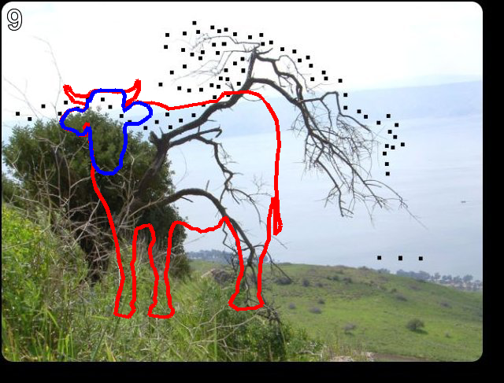

来到了新的一片区域，继续挑战！
第9题地址good.html（本题开始需要密码，密码是通过上一个区域最后一题得到的）

- 网页标题是
connect the dots，题目为空，源码中有包含一大串数字的隐藏代码，隐藏的题目是first+second=?
图片中是有一些点，但根据题目一贯的做法，应该是跟隐藏内容有关。
隐藏内容是一堆数字，但大部分是三位数，结合connect the dots，这些数应该就是坐标值，而我们要把它们连起来。
from io import BytesIO
import re
import requests
from PIL import Image, ImageDraw
with requests.Session() as sess:
sess.auth = ('huge', 'file')
response = sess.get('http://www.pythonchallenge.com/pc/return/good.html').text
hided_text = re.search(r'first:(?P<first>.*?)second:(?P<second>.*?)-->', response.replace('\n', ''))
first = [int(x) for x in re.findall(r'(\d+)', hided_text.group('first'))]
second = [int(x) for x in re.findall(r'(\d+)', hided_text.group('second'))]
img = Image.open(BytesIO(sess.get('http://www.pythonchallenge.com/pc/return/good.jpg').content))
draw = ImageDraw.Draw(img)
draw.line(first, 'red', 5)
draw.line(second, 'blue', 5)
img

可以看到，first数组描绘的是牛身，second数组描绘的是牛头，所以答案是bull.html，打开进入下一题。